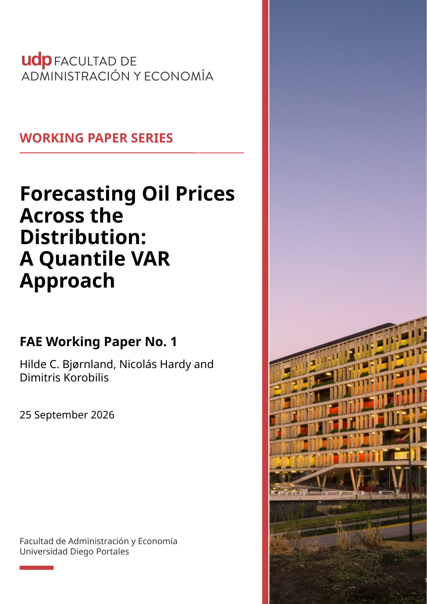

FAE Working Paper No. 1
Forecasting Oil Prices Across the Distribution: A Quantile VAR Approach
Hilde C. Bjørnland, Nicolás Hardy and Dimitris Korobilis
We develop a Quantile Bayesian Vector Autoregression (QBVAR) to forecast real oil prices across different quantiles of the conditional distribution.